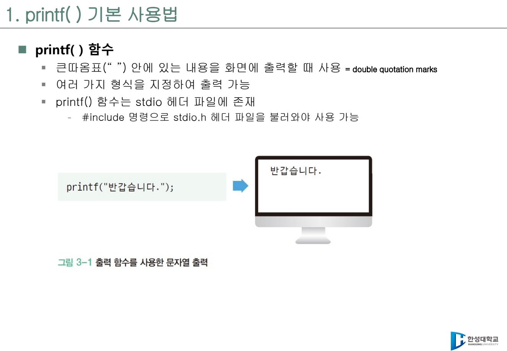
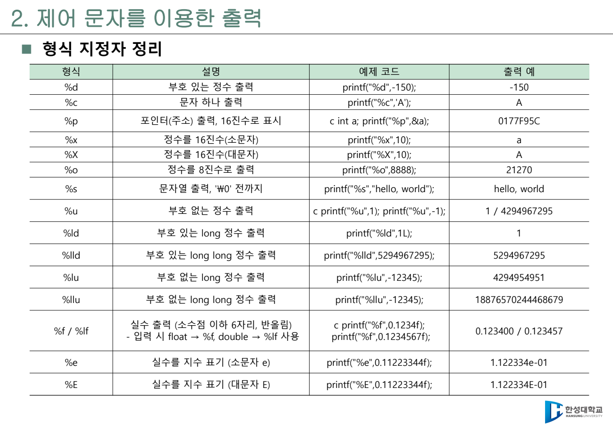
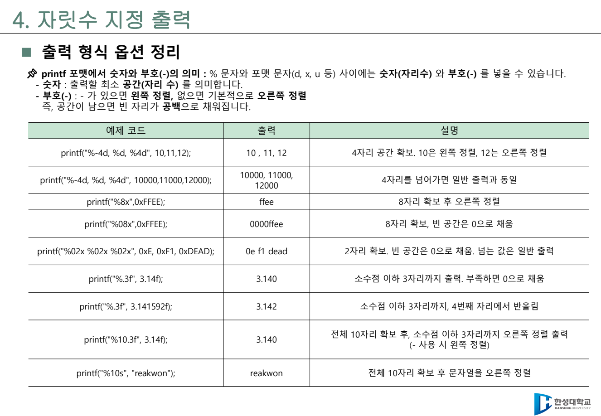
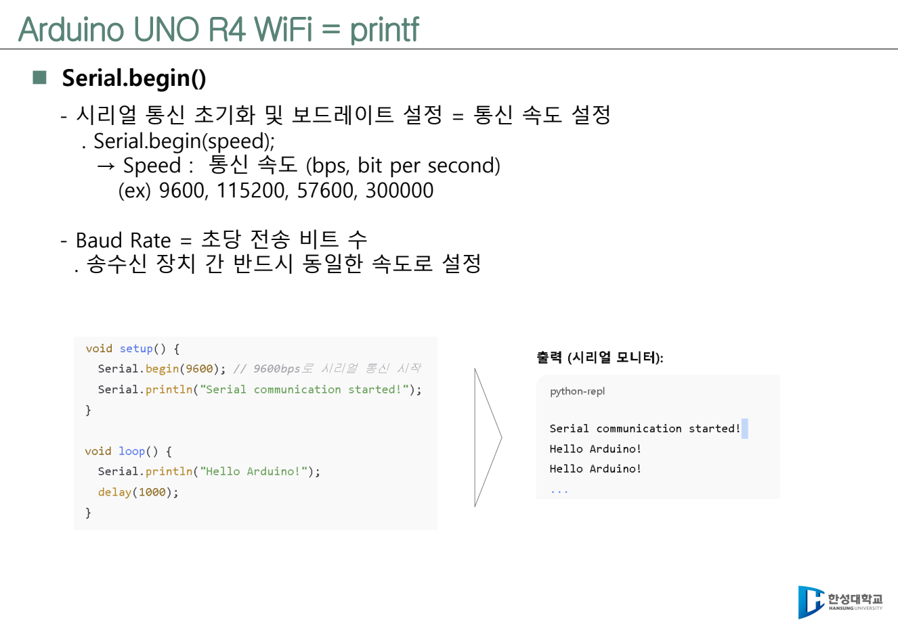
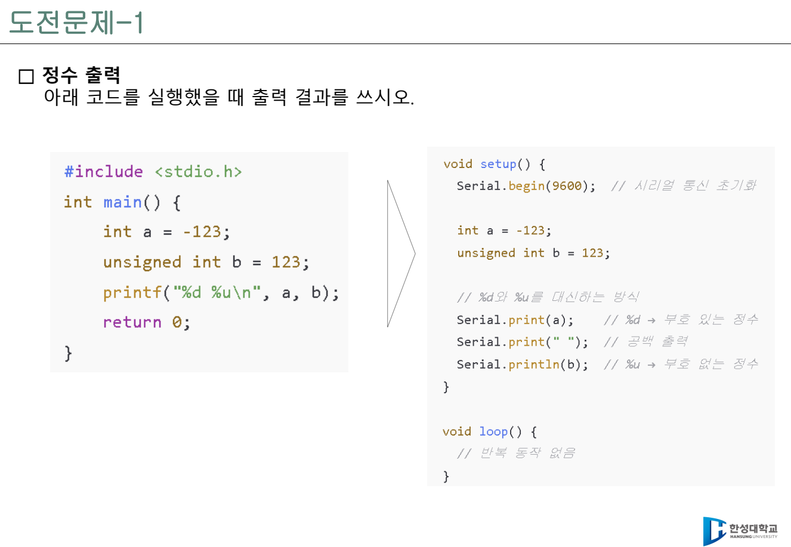
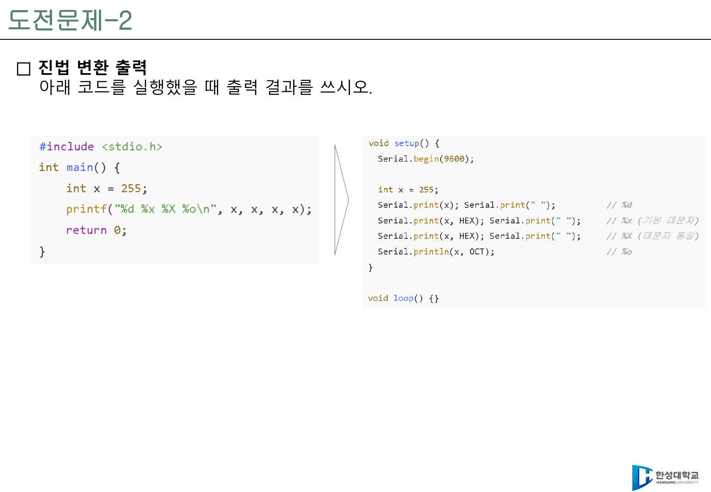
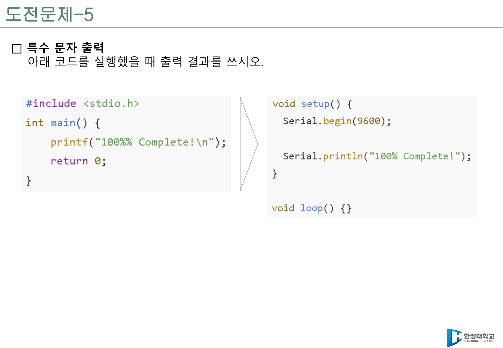
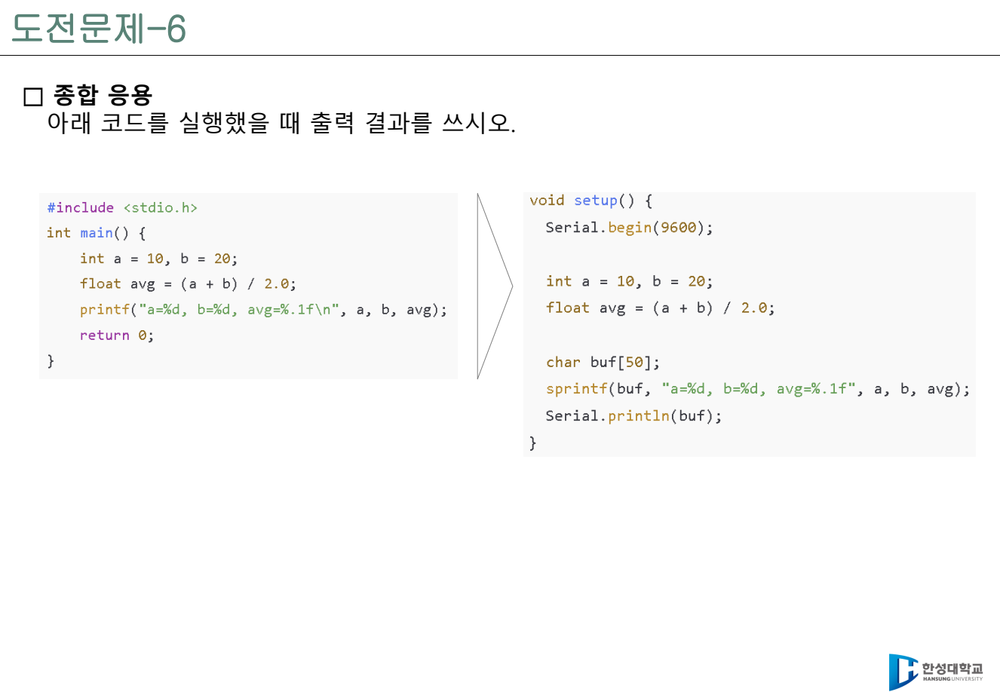

2주차 · 표준 출력(printf)¶
C언어 · 미래모빌리티학과 | CLO1 | 교재 Ch03 | 원본 PDF:
3. 표준 입출력 함수,3-1. Printf 실습

학습 목표¶
printf()가 표준 출력으로 문자열과 값을 보내는 과정을 설명할 수 있다.#include <stdio.h>와 형식 문자열(format string)의 역할을 이해한다.%d,%u,%f,%c,%s,%x,%o,%%를 자료형에 맞게 선택한다.\n,\t,\\,\"같은 제어 문자를 사용해 읽기 좋은 출력을 만든다.- 폭(width), 정밀도(precision), 왼쪽 정렬(
-), 0 채움(0), 진법 접두어(#)를 이용해 표 형태의 로그를 출력한다. - C 콘솔의
printf()사고방식을 Arduino UNO R4 WiFi의Serial.print(),Serial.println(),sprintf()로 연결한다.
이번 주차의 큰 그림¶
2주차의 핵심은 "프로그램이 자기 상태를 사람에게 어떻게 보여 주는가"이다. C 프로그램은 내부에서 숫자와 문자를 계산하지만, 그 값이 화면에 나오기 전까지는 사람이 확인할 방법이 없다. 그래서 printf()는 초반 C 수업에서 가장 중요한 관찰 도구다. 디버거를 쓰기 전에도 변수값, 계산 결과, 조건문 흐름, 반복문 진행 상황을 확인할 수 있기 때문이다.
원본 강의자료의 흐름은 다음 네 단계로 잡으면 이해하기 쉽다.
printf()기본 사용법: 큰따옴표 안의 문자열을 화면에 출력한다.- 제어 문자: 줄바꿈, 탭, 따옴표, 역슬래시처럼 화면 모양을 제어한다.
- 형식 지정자: 값의 자료형과 출력 형식을 일대일로 맞춘다.
- 자릿수 지정 출력: 값이 많아졌을 때 표처럼 정렬해 읽기 좋은 로그를 만든다.

여기서 중요한 말은 "큰따옴표 안은 문자열"이라는 점이다. "123"은 숫자처럼 보이지만 문자열이다. 즉 "123" + "456"처럼 계산하는 대상이 아니다. 반대로 123은 정수값이고, 이 값을 화면에 출력하려면 %d 같은 형식 지정자가 필요하다. 이 구분이 3주차 변수와 자료형 수업으로 이어진다.
원본 자료 확인 결과와 보강 범위¶
첨부된 3. 표준 입출력 함수.pdf와 3-1. Printf 실습.pdf를 다시 확인한 결과, 2주차 페이지에는 printf() 기본, 제어 문자, 형식 지정자, 폭/정밀도, Arduino Serial.print() 연결이 이미 반영되어 있었다. 다만 원본 실습 자료의 도전문제 흐름을 기준으로 보면 진법 변환 출력과 특수 문자 출력이 독립 도전문제로 더 명확히 보강될 필요가 있었다. 또한 원본 이론 자료에는 long, long long, 지수 표기 %e/%E도 포함되어 있어, 표준 출력 형식 지정자 설명을 조금 더 넓혀 두는 것이 좋다.
이번 보강에서는 다음을 추가한다.
| 보강 항목 | 원본 자료 위치 | 추가 위치 |
|---|---|---|
long, long long, %e, %E 확장 지정자 |
3. 표준 입출력 함수.pdf 형식 지정자 정리 |
3절 |
| 진법 변환 도전문제 | 3-1. Printf 실습.pdf 도전문제-2 |
8절 |
| 특수 문자 출력 도전문제 | 3-1. Printf 실습.pdf 도전문제-5 |
8절 |
Arduino Serial.print(x, HEX/OCT)와 C printf("%x/%o") 비교 |
3-1. Printf 실습.pdf 도전문제-2 |
8절 |
3시간 강의 운영안¶
| 시간 | 내용 | 교수자 진행 포인트 | 학생 활동 |
|---|---|---|---|
| 0~15분 | 1주차 환경 확인 | Visual Studio에서 새 C 파일 생성, 빌드/실행 확인 | Hello C 출력 |
| 15~35분 | printf() 기본 |
stdio.h, main(), 세미콜론, 문자열 출력 구조 설명 |
문자열 3줄 출력 |
| 35~60분 | 제어 문자 | \n, \t, \\, \", %%를 실제 화면 결과로 비교 |
자기소개 문장을 줄바꿈/탭으로 정리 |
| 60~95분 | 형식 지정자 | %d, %u, %f, %c, %s, %x, %o의 의미와 자료형 매칭 |
같은 값을 여러 형식으로 출력 |
| 95~125분 | 잘못된 매칭 | 지정자 수와 값의 수가 다를 때 경고, 가비지값 가능성 설명 | 오류 예제를 고쳐 보기 |
| 125~155분 | 폭·정밀도·정렬 | %6d, %-6d, %05d, %.2f, %8.2f로 표 정렬 |
차량 대시보드 표 만들기 |
| 155~175분 | Arduino UNO R4 연결 | printf()와 Serial.print()의 공통점, sprintf()로 포맷 문자열 만들기 |
시리얼 모니터 출력 코드 읽기 |
| 175~180분 | 형성평가 | 도전문제 2개를 짧게 풀이 | 제출 전 체크 |
이론-실습 연결표¶
| 이론 개념 | 바로 해볼 실습 | 확인 질문 |
|---|---|---|
| 문자열 출력 | printf("Hello\n");를 3줄 자기소개로 바꾼다 |
큰따옴표 안의 내용과 변수값은 어떻게 다른가? |
| 제어 문자 | \n, \t, \\, \", %%를 한 파일에서 출력한다 |
화면에 보이는 문자와 출력 모양을 바꾸는 문자를 구분할 수 있는가? |
| 형식 지정자 | 같은 정수를 %d, %x, %o로 출력한다 |
값은 같지만 표현 방식이 달라진다는 점을 설명할 수 있는가? |
| Arduino Serial 출력 | Serial.print()와 sprintf() 예제를 읽는다 |
C의 printf() 형식 문자열이 보드 출력에서 어떻게 재사용되는가? |
1. printf() 기본 사용법¶
printf는 "print formatted"의 줄임말로 이해하면 된다. 단순히 글자를 출력하는 함수가 아니라, 값을 지정한 형식으로 바꾸어 출력하는 함수다. 사용하려면 표준 입출력 헤더인 stdio.h를 포함해야 한다.
수업에서 처음 강조할 부분은 세 가지다.
#include <stdio.h>:printf()가 어디에 정의되어 있는지 컴파일러에게 알려 준다."Hello C\n": 큰따옴표 안의 내용은 문자열이다.\n: 출력 후 다음 줄로 이동한다.
학생들이 처음 작성하는 출력 예제는 짧아도 좋지만, 결과 화면을 반드시 확인해야 한다. \n을 뺀 코드와 넣은 코드를 비교하면 제어 문자의 필요성을 바로 느낄 수 있다.
첫 번째 코드는 HelloC처럼 한 줄에 붙어 보인다. 두 번째 코드는 줄이 나뉘어 읽기 쉽다. 디버깅 로그에서는 이런 작은 차이가 매우 중요하다.
2. 제어 문자를 이용한 출력¶
제어 문자는 화면에 보이는 일반 문자라기보다 "출력 방식을 바꾸는 약속"이다. 원본 자료에서는 줄바꿈, 따옴표, 특정 문자를 출력하기 위한 문자를 제어 문자로 소개한다.
| 표기 | 이름 | 출력 효과 | 예 |
|---|---|---|---|
\n |
newline | 다음 줄로 이동 | printf("A\nB"); |
\t |
tab | 일정 간격 띄우기 | printf("A\tB"); |
\\ |
backslash | 역슬래시 자체 출력 | printf("C:\\temp"); |
\" |
double quote | 큰따옴표 출력 | printf("\"C\""); |
%% |
percent | % 자체 출력 |
printf("100%%"); |
실습에서는 다음 코드를 직접 실행하게 한다.
#include <stdio.h>
int main(void) {
printf("이름\t점수\t등급\n");
printf("Kim\t95\tA\n");
printf("Lee\t88\tB\n");
printf("경로: C:\\workspace\\c\n");
printf("문장: \"printf는 출력 함수입니다.\"\n");
printf("배터리: 87%%\n");
return 0;
}
설명 포인트: \t는 간단한 표를 만들 때 편하지만, 글자 수가 크게 달라지면 열이 완벽히 맞지 않을 수 있다. 실제 로그를 정렬할 때는 뒤에서 배우는 폭 지정(%8d, %10s)을 쓰는 편이 더 안정적이다.
3. 형식 지정자와 자료형 매칭¶
printf()는 형식 문자열 안의 %... 자리에 뒤쪽 값을 차례대로 끼워 넣는다.
이때 %d와 speed는 한 쌍이다. 원본 자료에서 강조하는 것처럼 숫자와 표준 출력 형식 지정자는 일대일 대응 관계로 맞아야 한다. 지정자는 값의 종류를 알려 주고, 값은 지정자 자리에 들어간다.

| 지정자 | 의미 | 대표 자료형 | 예제 | 출력 예 |
|---|---|---|---|---|
%d |
부호 있는 10진 정수 | int |
printf("%d", -150); |
-150 |
%u |
부호 없는 10진 정수 | unsigned int |
printf("%u", 123u); |
123 |
%f |
실수 | float, double |
printf("%f", 3.14); |
3.140000 |
%c |
문자 1개 | char |
printf("%c", 'A'); |
A |
%s |
문자열 | char[], 문자열 리터럴 |
printf("%s", "RUN"); |
RUN |
%x |
16진수 소문자 | 정수 | printf("%x", 255); |
ff |
%X |
16진수 대문자 | 정수 | printf("%X", 255); |
FF |
%o |
8진수 | 정수 | printf("%o", 8); |
10 |
%p |
주소 | 포인터 | printf("%p", (void *)&a); |
환경마다 다름 |
%% |
퍼센트 문자 | 값 없음 | printf("100%%"); |
100% |
확장 형식 지정자¶
원본 자료에는 int보다 큰 정수와 지수 표기 실수도 함께 정리되어 있다. 처음부터 모두 외울 필요는 없지만, 컴파일 경고를 읽고 고칠 수 있도록 "자료형이 커지면 지정자도 달라진다"는 감각은 잡아야 한다.
| 지정자 | 의미 | 대표 자료형 | 예 |
|---|---|---|---|
%ld |
부호 있는 long 정수 | long |
printf("%ld", 100000L); |
%lld |
부호 있는 long long 정수 | long long |
printf("%lld", 5294967295LL); |
%lu |
부호 없는 long 정수 | unsigned long |
printf("%lu", 100000UL); |
%llu |
부호 없는 long long 정수 | unsigned long long |
printf("%llu", 5294967295ULL); |
%e |
지수 표기 실수, 소문자 e |
double |
1.122334e-01 |
%E |
지수 표기 실수, 대문자 E |
double |
1.122334E-01 |
출력과 입력의 %f, %lf
printf()에서는 float 값이 전달될 때 자동으로 double로 승격되므로 보통 %f로 출력한다. 반면 3주차 이후 scanf_s()로 입력받을 때는 float에는 %f, double에는 %lf를 사용한다. 출력과 입력의 규칙이 다르다는 점을 미리 표시해 두면 3주차 혼동을 줄일 수 있다.
일대일 대응 예제¶
#include <stdio.h>
int main(void) {
int rpm = 2500;
double voltage = 4.98;
char gear = 'D';
printf("RPM=%d, voltage=%.2fV, gear=%c\n", rpm, voltage, gear);
return 0;
}
예상 출력
위 코드에서 지정자는 %d, %.2f, %c 세 개이고, 뒤의 값도 rpm, voltage, gear 세 개다. 순서도 맞아야 한다.
잘못된 사용 예¶
printf("%d %d\n", 123); // 지정자가 값보다 많음
printf("%d\n", 123, 456); // 값이 지정자보다 많음
printf("%d\n", 3.14); // 자료형이 맞지 않음
printf("%f\n", 10); // 자료형이 맞지 않음
이런 코드는 컴파일 경고가 발생하거나, 실행 결과가 이상해질 수 있다. 수업에서는 일부러 잘못된 예제를 보여 준 뒤 "경고를 읽고 고치는 습관"으로 연결한다. 특히 지정자가 값보다 많으면 남는 자리에 예측할 수 없는 값이 출력될 수 있다. 이런 값을 흔히 가비지값이라고 부른다.
4. 자릿수 지정 출력¶
값이 하나일 때는 그냥 출력해도 된다. 하지만 값이 여러 줄로 쌓이면 정렬이 중요해진다. 차량 대시보드, 센서 로그, 로봇 상태 메시지는 사람이 빠르게 비교해야 하므로 열이 흔들리지 않아야 한다.
형식은 다음처럼 읽는다.

| 표현 | 의미 | 예제 출력 |
|---|---|---|
%4d |
최소 4칸, 오른쪽 정렬 | [ 10] |
%-4d |
최소 4칸, 왼쪽 정렬 | [10 ] |
%04d |
최소 4칸, 빈칸은 0으로 채움 | [0010] |
%8x |
16진수를 8칸 확보 후 출력 | [ ffee] |
%08x |
16진수를 8칸, 0으로 채움 | [0000ffee] |
%.3f |
소수점 이하 3자리 | [3.140] |
%10.3f |
전체 10칸, 소수점 이하 3자리 | [ 3.140] |
%10s |
문자열 10칸, 오른쪽 정렬 | [ RUN] |
예제를 실행하면서 대괄호를 함께 찍으면 공백 위치가 눈에 잘 보인다.
#include <stdio.h>
int main(void) {
printf("[%4d]\n", 10);
printf("[%-4d]\n", 10);
printf("[%04d]\n", 10);
printf("[%.3f]\n", 3.14);
printf("[%10.3f]\n", 3.14);
return 0;
}
강의 설명: 폭은 "최소 출력 칸 수"다. 값이 폭보다 길면 값이 잘리는 것이 아니라 그대로 출력된다. 정밀도는 실수에서 소수점 아래 자리 수를 정한다. %.3f는 소수점 이하 3자리까지 출력하고, 부족하면 0을 채우며, 넘치면 반올림한다.
진법과 접두어¶
정수는 10진수뿐 아니라 16진수, 8진수로도 출력할 수 있다. 임베디드와 로봇 제어에서는 레지스터 값, 센서 패킷, 색상값 등을 16진수로 볼 일이 많다.
printf("%x\n", 0xFF11); // ff11
printf("%#x\n", 0xFF11); // 0xff11
printf("%#X\n", 0xFF11); // 0XFF11
printf("%#o\n", 077); // 077
#은 진법 접두어를 표시할 때 유용하다. 단, %b 이진수 출력은 표준 C가 아니라 일부 컴파일러 확장 기능이므로 수업에서는 "환경에 따라 동작하지 않을 수 있다"고 안내한다.
5. 라이브 코딩: 차량 대시보드 로그¶
이번 주차의 대표 예제는 차량 또는 로봇 상태를 한눈에 볼 수 있는 로그다. 단순 출력에서 시작해 표 정렬까지 확장한다.
5.1 첫 번째 버전: 값만 출력¶
#include <stdio.h>
int main(void) {
double speed = 42.5;
int rpm = 2500;
double battery = 87.3;
char gear = 'D';
printf("speed=%f\n", speed);
printf("rpm=%d\n", rpm);
printf("battery=%f\n", battery);
printf("gear=%c\n", gear);
return 0;
}
이 코드는 동작하지만 실수 출력이 너무 길고, 단위가 없어 읽기 어렵다. 다음 단계에서 사람이 읽는 로그로 바꾼다.
5.2 두 번째 버전: 단위와 정밀도 추가¶
#include <stdio.h>
int main(void) {
double speed = 42.5;
int rpm = 2500;
double battery = 87.3;
char gear = 'D';
printf("속도: %.1f km/h\n", speed);
printf("RPM : %d rpm\n", rpm);
printf("배터리: %.1f%%\n", battery);
printf("기어: %c\n", gear);
return 0;
}
%.1f는 소수점 아래 한 자리만 보여 준다. 배터리 뒤의 %를 출력하려면 %%를 써야 한다.
5.3 세 번째 버전: 표 정렬¶
#include <stdio.h>
int main(void) {
double speed = 42.5;
int rpm = 2500;
double battery = 87.3;
char gear = 'D';
printf("================================\n");
printf("%-10s %10s\n", "ITEM", "VALUE");
printf("--------------------------------\n");
printf("%-10s %7.1f km/h\n", "Speed", speed);
printf("%-10s %7d rpm\n", "RPM", rpm);
printf("%-10s %7.1f %%\n", "Battery", battery);
printf("%-10s %10c\n", "Gear", gear);
printf("================================\n");
return 0;
}
예상 출력
================================
ITEM VALUE
--------------------------------
Speed 42.5 km/h
RPM 2500 rpm
Battery 87.3 %
Gear D
================================
이 예제는 5주차 조건문, 6주차 반복문, 7주차 시리얼 제어 실습의 기반이 된다. 지금은 값이 고정되어 있지만, 나중에는 센서값이나 사용자 입력값으로 바뀐다.
6. Arduino UNO R4 WiFi와 연결하기¶
원본 강의자료는 2주차 후반에 Arduino UNO R4 WiFi를 소개하고, printf()와 같은 출력 사고를 시리얼 통신으로 연결한다. 콘솔 C에서는 printf()가 화면으로 출력한다. Arduino에서는 Serial.print()와 Serial.println()이 시리얼 모니터로 출력한다.

6.1 Serial.begin()의 의미¶
void setup() {
Serial.begin(9600);
Serial.println("Serial communication started!");
}
void loop() {
Serial.println("Hello Arduino!");
delay(1000);
}
Serial.begin(9600)은 시리얼 통신 속도를 9600 bps로 맞춘다는 뜻이다. 보드와 시리얼 모니터가 같은 속도를 사용해야 글자가 정상적으로 보인다. 수업에서는 9600을 기본으로 쓰고, 필요하면 115200도 소개한다.
6.2 printf()와 Serial.print() 비교¶
| C 콘솔 | Arduino UNO R4 | 설명 |
|---|---|---|
printf("Hello\n"); |
Serial.println("Hello"); |
줄바꿈 포함 출력 |
printf("%d", a); |
Serial.print(a); |
정수 출력 |
printf("%u", b); |
Serial.print(b); |
부호 없는 정수 출력 |
printf("%.1f", avg); |
Serial.print(avg, 1); |
소수점 한 자리 출력 |
printf("a=%d, b=%d", a, b); |
sprintf(buf, "a=%d, b=%d", a, b); Serial.println(buf); |
포맷 문자열을 버퍼에 만든 뒤 출력 |
Arduino의 Serial.print()는 간단한 출력에는 편하지만, C의 printf()처럼 복잡한 형식을 한 번에 만들고 싶을 때는 sprintf()를 함께 사용한다.
void setup() {
Serial.begin(9600);
int a = 10;
int b = 20;
float avg = (a + b) / 2.0;
char buf[50];
sprintf(buf, "a=%d, b=%d, avg=%.1f", a, b, avg);
Serial.println(buf);
}
void loop() {
}
예상 출력
주의: char buf[50]은 출력 문자열을 담는 공간이다. 너무 작은 배열에 긴 문자열을 만들면 문제가 생길 수 있다. 12주차 포인터, 14주차 구조체로 갈수록 이런 메모리 감각이 중요해진다.
7. 실습¶
실습 2-1 · 문자열과 제어 문자¶
다음 요구사항을 만족하는 프로그램을 작성한다.
- 첫 줄에 본인 이름 출력
- 둘째 줄에 학과와 학번 출력
- 셋째 줄에
"C programming"처럼 큰따옴표가 포함된 문장 출력 - 넷째 줄에
C:\workspace\week02경로 출력
#include <stdio.h>
int main(void) {
printf("이름: Kim\n");
printf("학과\t학번\n");
printf("\"C programming\"\n");
printf("C:\\workspace\\week02\n");
return 0;
}
실습 2-2 · 정수와 진법 출력¶
#include <stdio.h>
int main(void) {
int value = 255;
printf("decimal = %d\n", value);
printf("hex = %x\n", value);
printf("HEX = %X\n", value);
printf("octal = %o\n", value);
printf("prefix = %#x\n", value);
return 0;
}
수업 질문: 255가 16진수로 ff가 되는 이유를 아직 완벽히 몰라도 괜찮다. 지금은 "같은 정수를 다른 표기법으로 볼 수 있다"는 점을 이해하면 된다.
실습 2-3 · 폭과 정렬 비교¶
#include <stdio.h>
int main(void) {
printf("[%5d]\n", 42);
printf("[%-5d]\n", 42);
printf("[%05d]\n", 42);
printf("[%8.2f]\n", 3.14159);
printf("[%-8.2f]\n", 3.14159);
return 0;
}
실행 후 대괄호 안의 공백 위치를 관찰한다. 공백을 눈으로 보기 어렵다면 대괄호를 꼭 함께 출력한다.
실습 2-4 · 차량 대시보드 만들기¶
아래 값들을 사용해 표 형태로 출력한다.
| 항목 | 값 |
|---|---|
| Speed | 42.5 |
| RPM | 2500 |
| Battery | 87.3 |
| Gear | 'D' |
필수 조건:
- 제목 줄과 구분선을 출력한다.
- 실수는 소수점 한 자리만 출력한다.
- 항목 이름은 왼쪽 정렬한다.
- 배터리 뒤에는
%를 출력한다.
실습 2-5 · Arduino R4 시리얼 출력 읽기¶
아래 Arduino 코드를 보고 시리얼 모니터에 어떤 결과가 나올지 적는다.
void setup() {
Serial.begin(9600);
int a = -123;
unsigned int b = 123;
Serial.print(a);
Serial.print(" ");
Serial.println(b);
}
void loop() {
}
정답은 C 코드 printf("%d %u\n", a, b);와 같은 사고방식으로 확인할 수 있다.
8. 도전문제¶
원본 실습 PDF의 도전문제는 C 콘솔 코드와 Arduino 코드를 나란히 비교하는 방식이다. 수업에서는 먼저 C 코드를 읽고 출력 결과를 쓴 뒤, 오른쪽 Arduino 코드가 같은 결과를 어떻게 시리얼 모니터에 보내는지 설명한다.

도전문제 1 · 정수 출력¶
#include <stdio.h>
int main(void) {
int a = -123;
unsigned int b = 123;
printf("%d %u\n", a, b);
return 0;
}
질문: 출력 결과를 쓰시오.
정답 및 해설
출력은 -123 123이다. %d는 부호 있는 정수, %u는 부호 없는 정수를 출력한다.
도전문제 2 · 진법 변환 출력¶

질문: 출력 결과를 쓰시오.
정답 및 해설
출력은 255 ff FF 377이다.
%d: 10진수이므로255%x: 16진수 소문자이므로ff%X: 16진수 대문자이므로FF%o: 8진수이므로377
Arduino에서는 같은 값을 다음처럼 출력한다.
Serial.print(x);
Serial.print(" ");
Serial.print(x, HEX);
Serial.print(" ");
Serial.print(x, HEX);
Serial.print(" ");
Serial.println(x, OCT);
Arduino의 HEX 출력은 기본적으로 대문자로 보일 수 있다. C의 %x와 %X처럼 소문자/대문자 형식을 세밀하게 구분하려면 sprintf()로 문자열을 만든 뒤 출력하는 방법을 사용할 수 있다.
도전문제 3 · 폭과 정렬¶
정답 및 해설
[ 42], [42 ], [00042]가 출력된다. 폭 5칸을 확보하고, -는 왼쪽 정렬, 0은 빈칸을 0으로 채운다.
도전문제 4 · 소수점 자리수¶
정답 및 해설
첫 줄은 3.14, 둘째 줄은 전체 8칸을 확보한 뒤 3.142가 출력된다. 소수점 자리수는 반올림되어 표시된다.
도전문제 5 · 특수 문자 출력¶

#include <stdio.h>
int main(void) {
printf("C:\\workspace\\week02\n");
printf("\"printf\" practice\n");
printf("Progress: 100%%\n");
return 0;
}
질문: 출력 결과를 쓰시오.
정답 및 해설
출력은 다음과 같다.
\\는 역슬래시 하나, \"는 큰따옴표, %%는 퍼센트 기호를 출력한다. \n은 줄바꿈을 만든다. 이 문제는 화면에 보이는 결과만 외우기보다, "문자열 안에서 특별한 의미를 가진 문자를 어떻게 문자 그대로 출력하는가"를 묻는 문제로 이해해야 한다.
도전문제 6 · 종합 응용과 sprintf()¶

#include <stdio.h>
int main(void) {
int a = 10, b = 20;
float avg = (a + b) / 2.0;
printf("a=%d, b=%d, avg=%.1f\n", a, b, avg);
return 0;
}
Arduino에서는 다음처럼 같은 문자열을 만든 뒤 시리얼 모니터로 보낼 수 있다.
void setup() {
Serial.begin(9600);
int a = 10, b = 20;
float avg = (a + b) / 2.0;
char buf[50];
sprintf(buf, "a=%d, b=%d, avg=%.1f", a, b, avg);
Serial.println(buf);
}
void loop() {
}
정답 및 해설
출력은 a=10, b=20, avg=15.0이다. avg 계산에서 2.0을 사용했기 때문에 실수 나눗셈이 되고, %.1f로 소수점 한 자리까지 표시한다.
9. 자주 막히는 지점¶
printf("123")의123은 문자열이다. 계산 가능한 숫자123과 다르다.printf("%d", 3.14);처럼 지정자와 자료형이 다르면 경고나 이상 출력이 생길 수 있다.- 지정자 수와 뒤쪽 값의 수는 맞아야 한다.
%자체를 출력하려면%%를 쓴다.\n을 빼면 다음 출력이 같은 줄에 붙는다.- 실수 기본 출력은 보통 소수점 아래 6자리까지 나오므로
%.1f,%.2f처럼 정밀도를 지정한다. - 폭 지정은 값 자체를 바꾸지 않는다. 화면에 보이는 최소 칸 수만 정한다.
- Arduino 시리얼 모니터 글자가 깨지면
Serial.begin()의 보드레이트와 시리얼 모니터 설정이 같은지 확인한다.
10. 형성평가 체크포인트¶
-
printf()를 사용하려면 어떤 헤더 파일이 필요한지 말할 수 있다. -
\n,\t,\\,\",%%의 출력 결과를 설명할 수 있다. -
%d,%u,%f,%c,%s,%x,%o중 상황에 맞는 지정자를 고를 수 있다. - 지정자와 값의 수가 맞지 않을 때 왜 문제가 되는지 설명할 수 있다.
-
%6.1f,%-10s,%05d의 의미를 말할 수 있다. - C의
printf()예제를 Arduino UNO R4의Serial.print()흐름으로 바꿔 읽을 수 있다.
11. 과제¶
- 본인의 이름, 학과, 학번을 제어 문자
\n,\t,\"를 포함해 출력한다. - 정수 하나를 10진수, 16진수, 8진수로 출력한다.
- 차량 대시보드 표를 만든다. 항목은
Speed,RPM,Battery,Gear를 포함한다. - Arduino UNO R4 WiFi 시리얼 모니터에
a=10, b=20, avg=15.0이 출력되는 코드를 작성한다.
12. 다음 주차 연결¶
이번 주차에는 값을 직접 코드에 적어 두고 출력했다. 3주차에는 사용자가 키보드로 입력한 값을 변수에 저장하고, 그 값을 다시 printf()로 출력한다. 즉 2주차는 "보여 주기", 3주차는 "입력받고 보여 주기"로 확장된다.
참조¶
- 교재 Ch03 · 표준 입출력 함수
printf레퍼런스: https://en.cppreference.com/w/c/io/fprintf